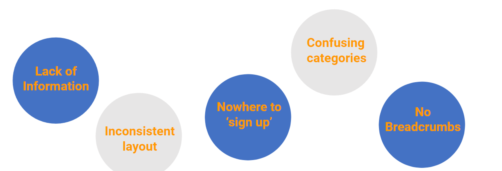
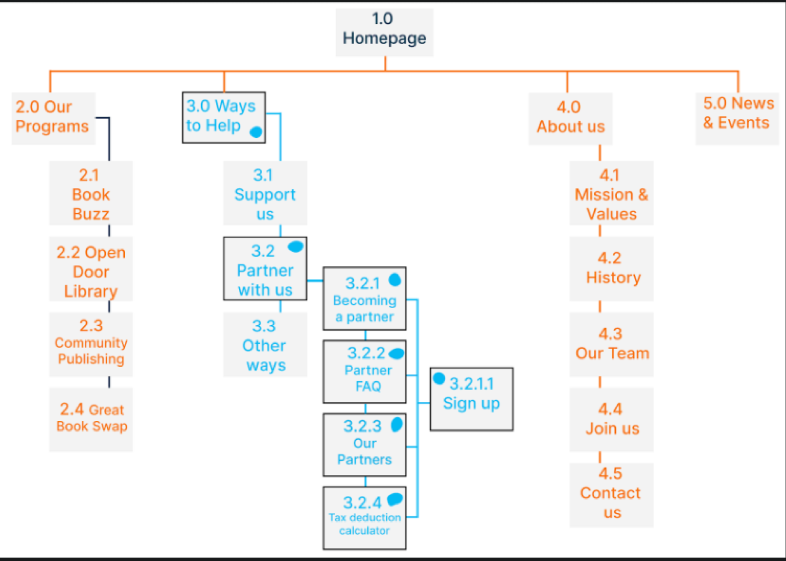
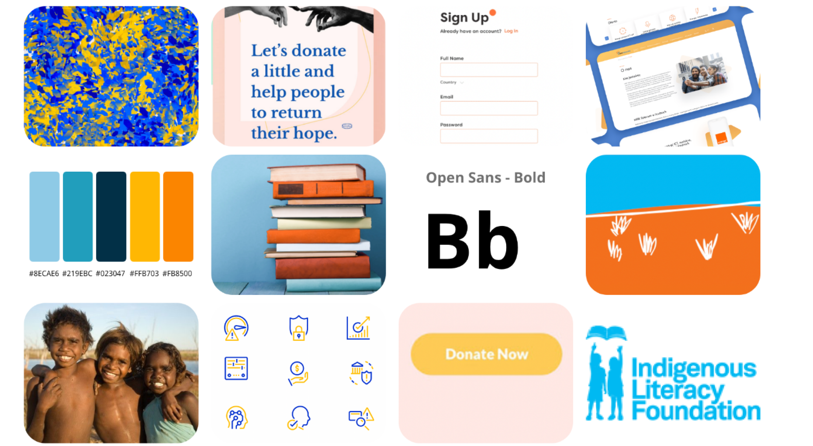
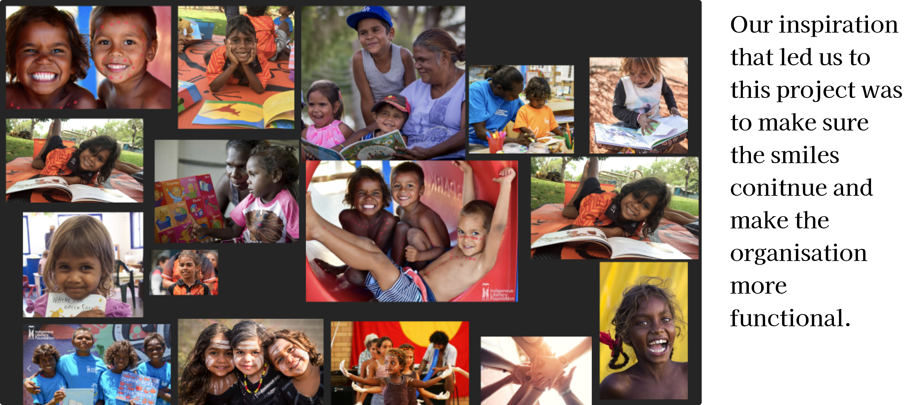

Design Process

During my redesign i have made a series of changes of the outlook of the webpage ,for i had only 1 month to do the project alone , i have managed to complete the project using the step

Partnership is a viable way for a charity to raise extra funds, resources or services. A good partnership can help a charity extend its reach and impact in the community much farther than if it acted alone.
We have observed that current site is not providing a streamlined and direct way for partners to get involved. This is causing potential users frustrations as the process can be confusing and often time consuming.
How might we aid businesses in navigating the website, so they feel confident that they have all the information they need to become partners.
Weakness
During my redesign i have made a series of changes of the outlook of the webpage ,for i had only 1 month to do the project alone , i have managed to complete the project using the step

This simple user flow on the original webpage created a sense of user confusion about the journey because of the path. Specifically, it had confusing headlines and did not have a clear indication of the pages information holding.

Competitor Analysis
The next step was conducting a quick competitor analysis to determine the pros and cons of other similar apps and sites. From there, we created user stories to better understand our users’ needs and goals.

Sitemap
To improve on the user flow we decided to seek out the path that our user (Peter) was going to use to achieve his goal.
We found that changing the names of the category within the “Partner with us” page to make our user understand where they are going and what this page indicates that it is.


MoodBoard
To improve on the user flow we decided to seek out the path that our user (Peter) was going to use to achieve his goal.
Style Guide
We kept the style similar to the original and changed the typography slighly with modern looking icons.

Prototype
In our first iteration of the low fidelity wireframe, we changed the layout of the “Homepage” and the “Partner with us” page.

Prototype
Next, we moved onto Mid fidelity wirframing.


High fidelity prototype